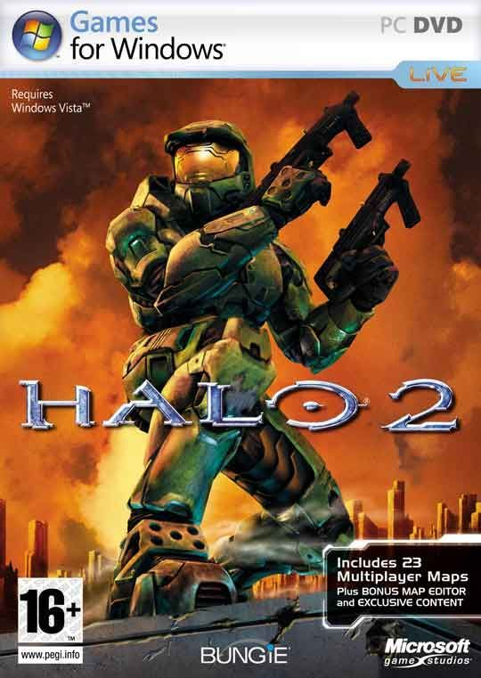

Halo 2
Descripción
Halo 2: Anniversary es la versión remasterizada del clásico shooter de ciencia ficción. Forma parte de Halo: The Master Chief Collection y presenta gráficos mejorados, escenas cinemáticas reeditadas y compatibilidad con resoluciones modernas para ofrecer una experiencia renovada del épico conflicto entre humanos, Covenant y Flood.
Requisitos Mínimos
- Sistema operativo: Windows 7 de 64 bits
- Procesador: Intel Core i3-550 / AMD Phenom II X4 960T
- Memoria: 8 GB de RAM
- Gráficos: NVIDIA GeForce GTS 450 / AMD Radeon HD 6850
- DirectX: Versión 11
- Almacenamiento: 60-70 GB de espacio disponible
Requisitos Recomendados
- Sistema operativo: Windows 10 de 64 bits
- Procesador: Intel Core i7-870 / AMD FX-4100
- Memoria: 8 GB de RAM o más
- Gráficos: NVIDIA GeForce GTX 560 Ti / AMD Radeon R7 360
- DirectX: Versión 11
- Almacenamiento: 60-70 GB de espacio disponible